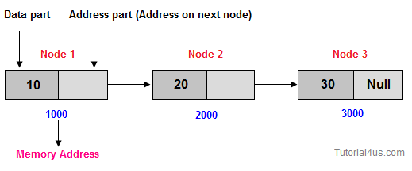
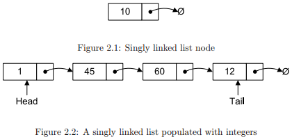

Linked list is a special type of data structure where all data elements are linked to one another. Linked list is the collection of nodes and every nodes contains two parts data part and address part.

Suppose you want ot store marks of 50 students, so need to write code like below;
int marks[50];
But some time you need to store more than 50 students marks, in that case you can not increase memory of array, and some time you need to store less than 50 students marks in this case extra memory will be wastage. To overcome this problem you need to use Linked List because in linked list memory will be created at run time.
A common example of linked list is train, in this case all the buggies are nodes and two coaches are connected using the connectors, peoples seating arrangement inside the coaches is called as data part of linked list while connection between two buggies is address filed of linked list.
Like linked list, trains also have last coach which is not further connected to any of the buggies. Engine can be called as first node of linked list and last buggies are last node of linked list.
1. Singly Linked List:--
Singly linked lists are one of the most primitive data structures you will find in
this book. Each node that makes up a singly linked list consists of a value, and
a reference to the next node (if any) in the list.

1.1 Insertion:-
In general when people talk about insertion with respect to linked lists of any
form they implicitly refer to the adding of a node to the tail of the list. When
you use an API like that of DSA and you see a general purpose method that
adds a node to the list, you can assume that you are adding the node to the tail
of the list not the head.
Adding a node to a singly linked list has only two cases:
1. head = ∅ in which case the node we are adding is now both the head and
tail of the list; or
2. we simply need to append our node onto the end of the list updating the
tail reference appropriately.
1) algorithm Add(value)
2) Pre: value is the value to add to the list
3) Post: value has been placed at the tail of the list
4) n ← node(value)
5) if head = ∅
6) head ← n
7) tail ← n
8) else
9) tail.Next ← n
10) tail ← n
11) end if
12) end Add
As an example of the previous algorithm consider adding the following sequence
of integers to the list: 1, 45, 60, and 12, the resulting list is that of
Figure 2.2.
1.2 Searching:-
Searching a linked list is straightforward: we simply traverse the list checking
the value we are looking for with the value of each node in the linked list. The
algorithm listed in this section is very similar to that used for traversal in §2.1.4.
1) algorithm Contains(head, value)
2) Pre: head is the head node in the list
3) value is the value to search for
4) Post: the item is either in the linked list, true; otherwise false
5) n ← head
6) while n 6= ∅ and n.Value 6= value
7) n ← n.Next
8) end while
9) if n = ∅
10) return false
11) end if
12) return true
13) end Contains
1.3 Deletion:-
Deleting a node from a linked list is straightforward but there are a few cases
we need to account for:
1. the list is empty; or
2. the node to remove is the only node in the linked list; or
3. we are removing the head node; or
4. we are removing the tail node; or
5. the node to remove is somewhere in between the head and tail; or
6. the item to remove doesn’t exist in the linked list
The algorithm whose cases we have described will remove a node from anywhere
within a list irrespective of whether the node is the head etc. If you know
that items will only ever be removed from the head or tail of the list then you
can create much more concise algorithms. In the case of always removing from
the front of the linked list deletion becomes an O(1) operation.
1) algorithm Remove(head, value)
2) Pre: head is the head node in the list
3) value is the value to remove from the list
4) Post: value is removed from the list, true; otherwise false
5) if head = ∅
6) // case 1
7) return false
8) end if
9) n ← head
10) if n.Value = value
11) if head = tail
12) // case 2
13) head ← ∅
14) tail ← ∅
15) else
16) // case 3
17) head ← head.Next
18) end if
19) return true
20) end if
21) while n.Next 6= ∅ and n.Next.Value 6= value
22) n ← n.Next
23) end while
24) if n.Next 6= ∅
25) if n.Next = tail
26) // case 4
27) tail ← n
28) end if
29) // this is only case 5 if the conditional on line 25 was f alse
30) n.Next ← n.Next.Next
31) return true
32) end if
33) // case 6
34) return false
35) end Remove
1.4 Traversing the list:-
Traversing a singly linked list is the same as that of traversing a doubly linked
list (defined in §2.2). You start at the head of the list and continue until you
come across a node that is ∅. The two cases are as follows:
1. node = ∅, we have exhausted all nodes in the linked list; or
2. we must update the node reference to be node.Next.
The algorithm described is a very simple one that makes use of a simple
while loop to check the first case.
1) algorithm Traverse(head)
2) Pre: head is the head node in the list
3) Post: the items in the list have been traversed
4) n ← head
5) while n 6= 0
6) yield n.Value
7) n ← n.Next
8) end while
9) end Traverse
2.1.5 Traversing the list in reverse order
Traversing a singly linked list in a forward manner (i.e. left to right) is simple
as demonstrated in §2.1.4. However, what if we wanted to traverse the nodes in
the linked list in reverse order for some reason? The algorithm to perform such
a traversal is very simple, and just like demonstrated in §2.1.3 we will need to
acquire a reference to the predecessor of a node, even though the fundamental
characteristics of the nodes that make up a singly linked list make this an
expensive operation. For each node, finding its predecessor is an O(n) operation,
so over the course of traversing the whole list backwards the cost becomes O(n
2
).
Figure 2.3 depicts the following algorithm being applied to a linked list with
the integers 5, 10, 1, and 40.
1) algorithm ReverseTraversal(head, tail)
2) Pre: head and tail belong to the same list
3) Post: the items in the list have been traversed in reverse order
4) if tail 6= ∅
5) curr ← tail
6) while curr 6= head
7) prev ← head
8) while prev.Next 6= curr
9) prev ← prev.Next
10) end while
11) yield curr.Value
12) curr ← prev
13) end while
14) yield curr.Value
15) end if
16) end ReverseTraversal